Krefter mellom ladninger i bevegelse
Fra Coloumbs lov til en magnetisk kraftlov
(MERK: Dette kapittelet skal skrives om til å ta utgangspunkt i Biot-Savarts lov. Utledningene som er gjort her gir ikke gale resultater, og kan være pedagogisk gode, men du bør være klar over at uttrykkene som er brukt for det magnetiske feltet for enkeltladninger er forenklinger til en ikke-relativistisk situasjon. Dette er nå rettet i læreboken.)
(Lærebok 10.1)
Oppgave: To ladninger i bevegelse
Figuren viser to ladningen \( Q_1 \) og \( Q_2 \) som beveger seg med hastigheter i \( y \)-retningen.
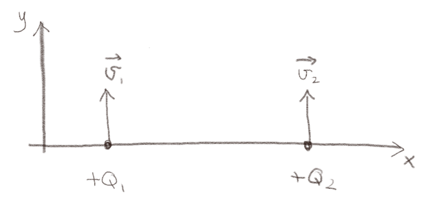
a) Hvilken vei virker kraften fra \( Q_1 \) på \( Q_2 \)?
\( -\x \)
Denne oppgaven blir gjennomgått i detalj i det neste eksempelet.
Eksempel: To ladninger i bevegelse
(Lærebok 10.1.2)
Oppgave: Krefter mellom ladninger i bevegelse
En ladning \( Q_1>0 \) i origo beveger seg i \( z \)-retningen med en hastighet \( \vec{v}_1 = v_1 \z \).
a) Hva er størrelsen og retningen på kraften på en ladning \( Q_2>0 \) i punktet \( (a,0,0) \) med hastigheten \( \vec{v}_2 = v_2 \z \)? Lag en figur som viser retningen på \( \vec{R} \) og retningen på kraften på \( Q_2 \).
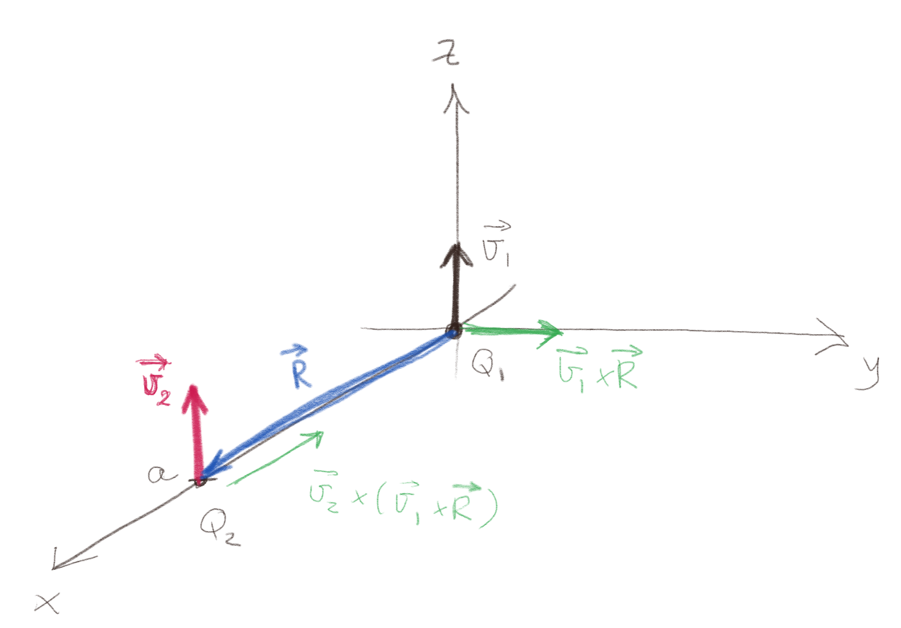
b) Hva er størrelsen og retningen på kraften på en ladning \( Q_2>0 \) i punktet \( (a,0,0) \) med hastigheten \( \vec{v}_2 = v_2 \y \)? Lag en figur som viser retningen på \( \vec{R} \) og retningen på kraften på \( Q_2 \).

c) Hva er størrelsen og retningen på kraften på en ladning \( Q_2>0 \) i punktet \( (a,0,0) \) med hastigheten \( \vec{v}_2 = v_2 \x \)? Lag en figur som viser retningen på \( \vec{R} \) og retningen på kraften på \( Q_2 \).
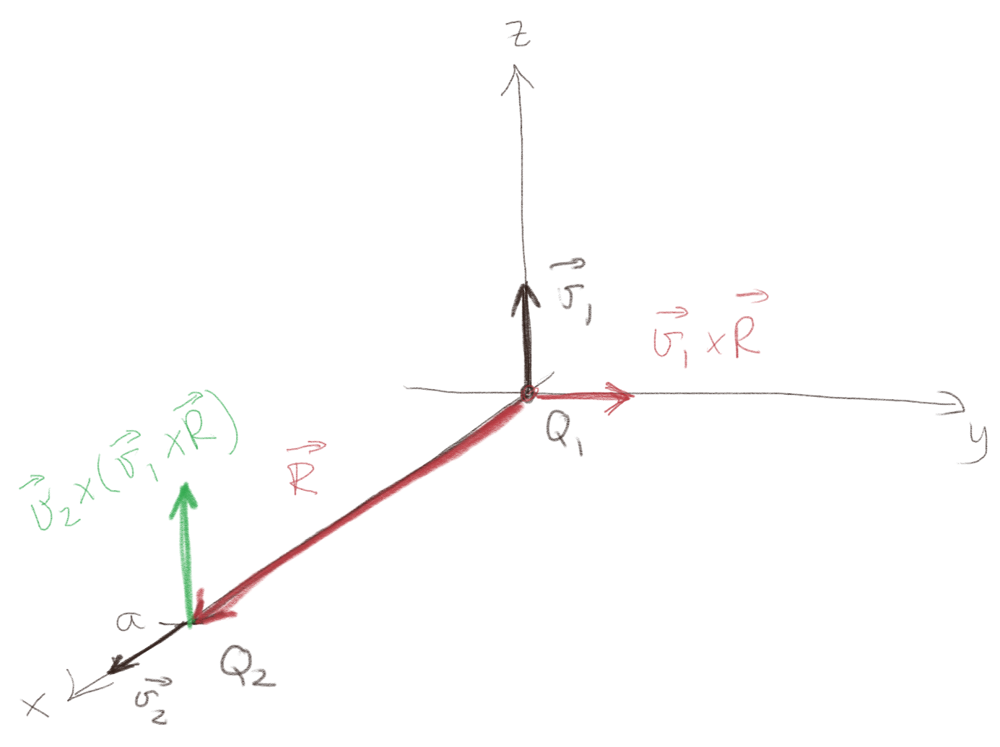
Magnetisk felt
(Lærebok 10.1.3)
Oppgave: Felt i forskjellige posisjoner
En ladning \( Q>0 \) beveger seg som vist i figuren under.
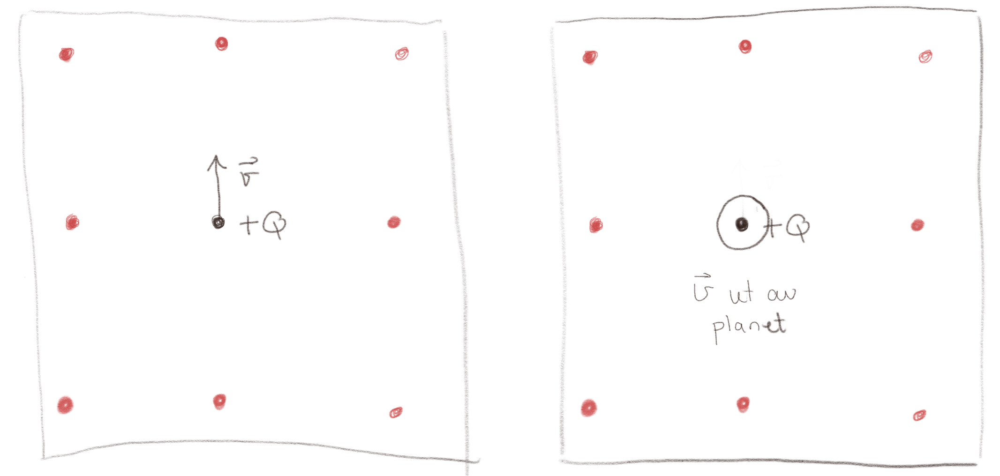
a) Tegn det magnetiske feltet i hvert av de røde punktene for figuren til venstre. Tegn i hvert tilfelle inn \( \vec{R} \).
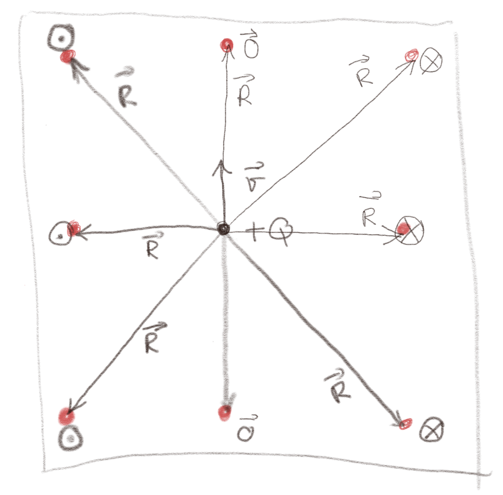
Merk at det magnetiske feltet skal bli mindre når \( R \) blir større. Dette er ikke vist i figuren.
b) Tegn det magnetiske feltet i hvert av de røde punktene for figuren til høyre. Tegn i hvert tilfelle inn \( \vec{R} \).
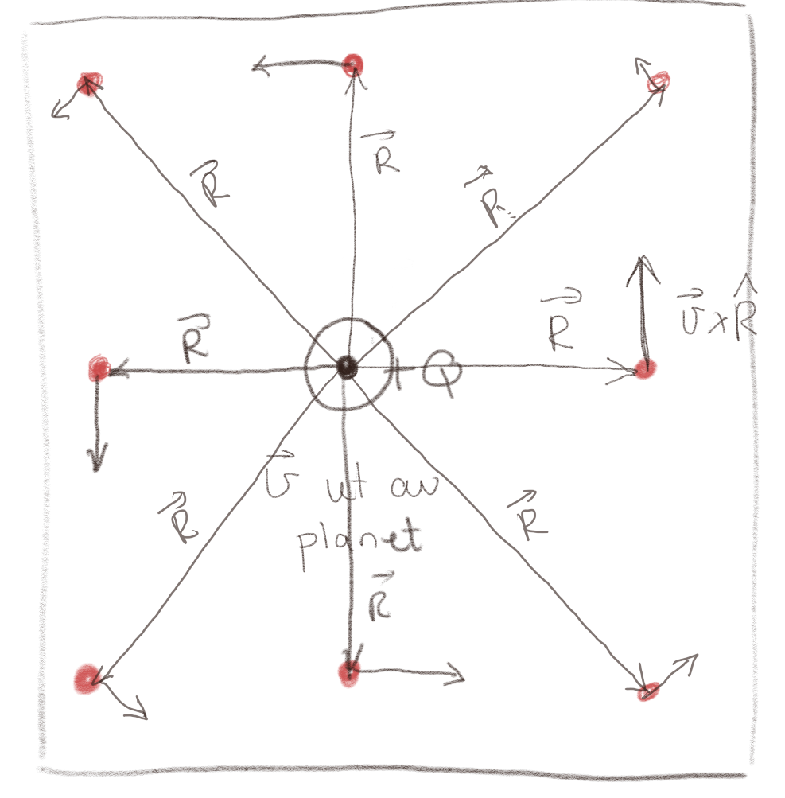
Merk at det magnetiske feltet skal bli mindre når \( R \) blir større. Dette er illustrert i figuren, men forholdet mellom lengden av vektorene er ikke regnet ut. Dette kan du jo regne ut og visualisere i Python, hvis du vil.
Biot-Savarts lov
(Lærebok 10.2)
Oppgave: Finn feltet
Vi ønsker å finne det magnetiske feltet \( \vec{B} \) i punktet \( P \) fra en strømførende kabel ved hjelp av Biot-Savarts lov: $$ \begin{equation} \vec{B}(\vec{r}) = \frac{\mu_0}{4 \pi} \int \frac{I \d \vec{l} \times \Rhat}{R^2} \tag{1} \end{equation} $$ i systemet som er vist i figuren under.
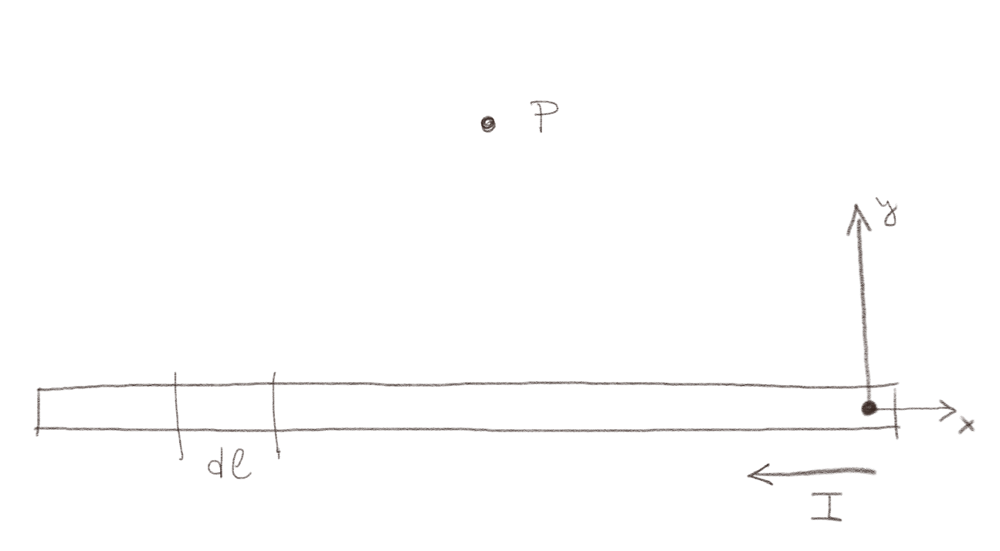
a) Tegn inn \( \d\vec{l} \) i figuren.
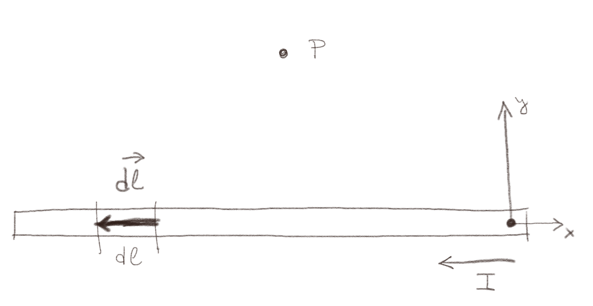
b) Tegn inn \( \vec{R} \) i figuren.
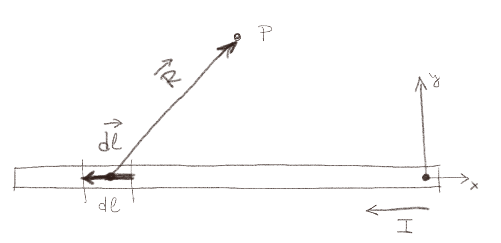
c) Hvilken retning har det infinitesimale bidraget \( \d \vec{B}(P) \) fra strømmen i \( \d \vec{l} \)?
Retningen er gitt av retningen til \( \d \vec{l} \times \vec{R} \) som peker inn i planet.
Oppgave: Finn feltet igjen
Vi ønsker å finne det magnetiske feltet \( \vec{B} \) i punktet \( P \) fra en strømførende kabel ved hjelp av Biot-Savarts lov: $$ \begin{equation} \vec{B}(\vec{r}) = \frac{\mu_0}{4 \pi} \int \frac{I \d \vec{l} \times \Rhat}{R^2} \tag{2} \end{equation} $$
a) Hva er \( |\frac{\d \vec{l} \times \Rhat}{R^2}| \) for tilfellet vist i figuren under?
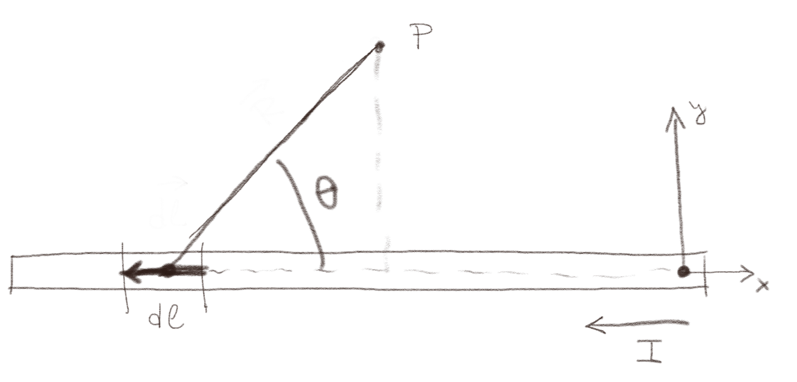
Vi kan her bruke definisjonen av kryssproduktet direkte, hvor \( |\d \vec{l} \times \Rhat| = |\d \vec{l}|\, |\Rhat| |\sin \phi| \), hvor \( \phi \) er vinkelen mellom \( \d \vec{l} \) og \( \Rhat \), \( \phi = \pi - \theta \) slik at \( |\d \vec{l} \times \Rhat| = \d l \sin (\pi - \theta) = \d l \sin \theta \) slik at $$ \begin{equation} |\frac{\d \vec{l} \times \Rhat}{R^2}| = \frac{\d l \sin \theta}{R^2} \tag{3} \end{equation} $$
b) Hva er \( \frac{I \d \vec{l} \times \Rhat}{R^2} \) uttrykt i kartesiske koordinater \( (x,y,z) \) og \( (x',y',z') \) hvor integralet er over \( \d x' \, \d y' \, \d z' \) og \( P \) er i \( (0,y,0) \) som vist i figuren under?
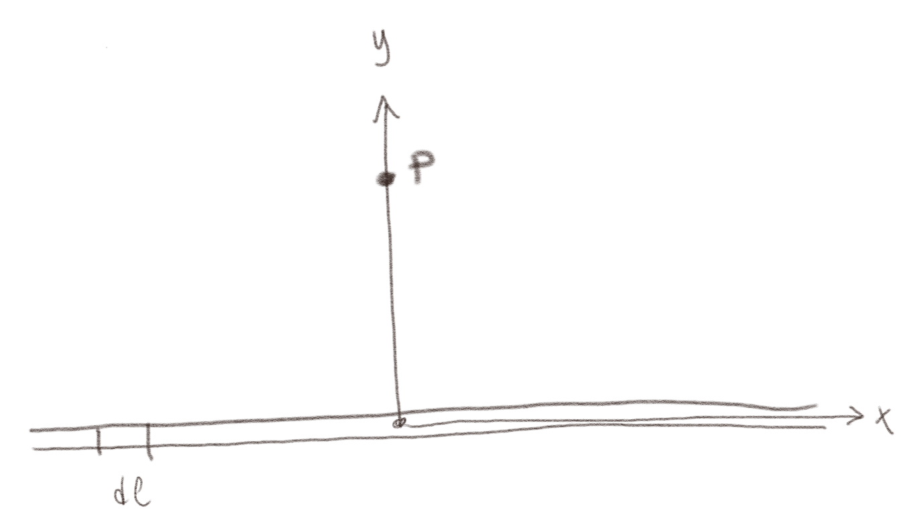
I dette tilfellet er \( \vec{R} = \vec{r} - \vec{r}' = (0,y,0)-(x',0,0) = (-x',y,0) \) mens \( \d \vec{l} = -\d x' \x \). Da finner vi at $$ \begin{equation} \frac{\d \vec{l} \times \vec{R}}{R^3} = \frac{- \d x' \x \times (-x',y,0) }{R^3} = \frac{- \d x' y \z}{((x')^2 + y^2)^{3/2}} \; . \tag{4} \end{equation} $$
Oppgave: Felt fra en bit og det hele
Figuren viser en ledning med en strøm \( I \).
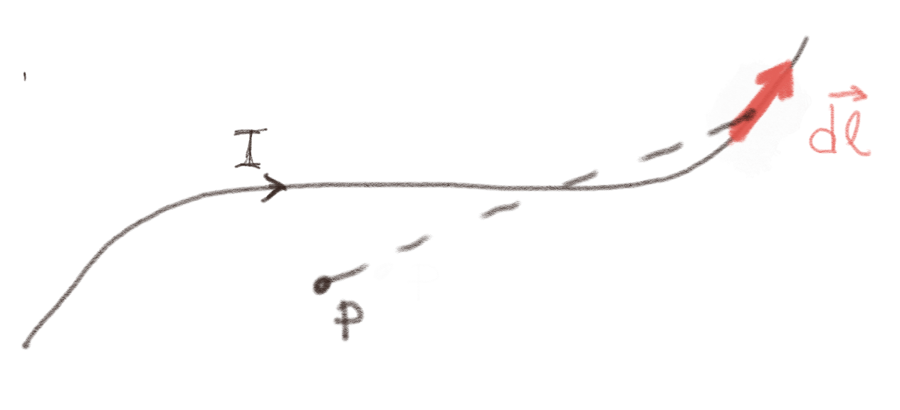
a) Hvilken retning forventer du at \( \vec{B} \) har i punktet \( P \)?
Jeg forventer at de viktiste bidragene til \( \vec{B} \) kommer fra området hvor \( R \) er liten. Der vil bidragene være i retningen \( \d \vec{l} \times \Rhat \) som vil peke inn i planet.
b) Hvilken retning vil bidraget \( \d \vec{B}(P) \) fra linjestykket med lengde \( \d l \) i rødt ha?
Bidraget fra dette elementet er i retningen \( \d \vec{l} \times \vec{R} \) hvor \( \vec{R} \) peker fra \( \d \vec{l} \) og til punktet \( P \). Dette bidraget vil peke ut av planet.
Eksempel: Magnetfelt fra sirkulær strøm: analytisk løsning
(Lærebok 10.2.3)
Eksempel: Magnetfelt fra sirkulær strøm: numerisk løsning
(Lærebok 10.2.3)
Oppgave: Programsnutt
Hva gjør følgende programsnutt?
import numpy as np
mu04pi = mu0/(4*np.pi)
N = L/a
for i in range(N):
for j in range(N):
r = np.array([i*a-x,j*a-y])
B[i,j] = mu04pi*Idl*np.cross(u,r)/norm(r)**3
Du må selv finne ut hva variablene som ikke er definert er.
- Finner magnetfeltet langs en linje med lengde \( L \) fra en strøm langs en linje med lengde \( L \)
- Finner magnetfeltet i et kvadratisk område \( L \times L \) fra en strøm langs en linje med lengde \( L \)
- Finner magnetfeltet i et punkt fra en overflatestrøm i et kvadratisk område \( L \times L \)
- Finner magnetfeltet i et kvadratisk område \( L \times L \) fra et strømelement i origo
4
Vi ser at vektoren r løpet over et kvadratisk område med størrelse \( L \times L \). I hvert punkt \( \vec{r}_i \) finner vi det magnetiske feltet fra en strømelement \( I \d l \uhat \) i origo.